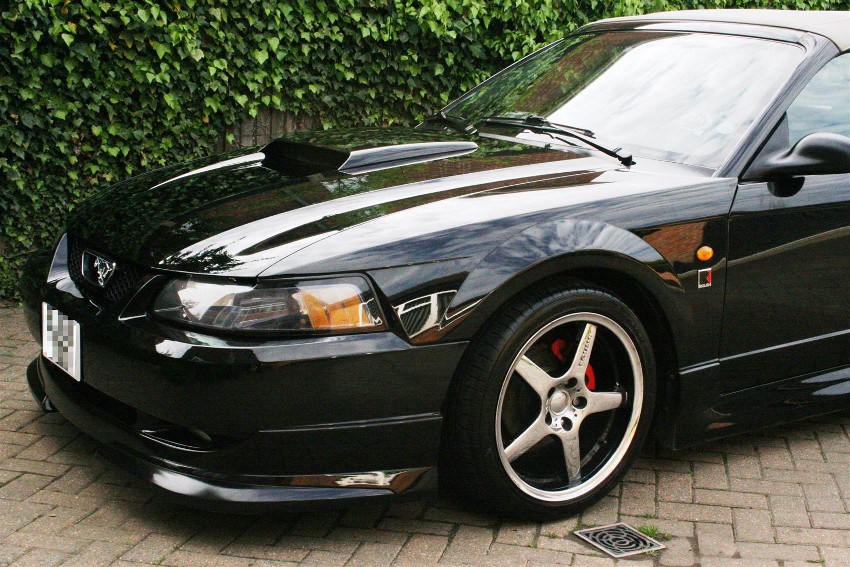

1996 Volvo 960
Volvo paint is one of our favourites to work with!
1999 Mitsubishi Evo VI
The Evo came to us looking a bit worse for wear, but a few days saw it spruced up again.
1999 Volvo S40
Light car, dark trim - a great recipe.
2000 Skoda Fabia
Another car that hadn't had much care during its life. Look at the shine on the bonnet now!
2000 Volvo V40
A deep pearlescent indigo that - once we'd removed years of grime and many swirlmarks - came to a brilliant shine, and contrasted a treat with bright silver wheels!
2001 Toyota Yaris T-Sport
Our award-winning project vehicle - even we were amazed how well ten-year-old Toyota paint can be revived!
2001 Volvo V70
A high-mileage motorway car, looking a treat after some TLC.
2001 Toyota Yaris T-Sport
Another Yaris - this one came to us with tree sap on it, and left us looking like a jewel.
2002 Roush Mustang
A real privilege to detail this rare Mustang on its way to the Goodwood Festival of Speed!

2002 Land Cruiser VX
A big car and a big undertaking to bring it back to its best.
2002 Honda S2000
Yellow isn't an easy colour to bring to a deep lustre, but we were delighted with the results we got with this S2000!
2004 Audi S4 Cabriolet
This S4 came to us looking a bit down-at-heel. The owner was delighted with the transformation!
2004 Daewoo Matiz
A more unusual colour, now brought to a deep shine...
2005 Volvo V70R
Another rare car in an unusual colour - this one had been relatively well-looked-after, but suffered from a build-up of poor-quality waxes on the paintwork. We soon put that right!
2007 BMW Z4M
BMW paint is known for its quality, and we certainly found that to be true working with this M-car.
2010 Volvo V50
Newer cars also benefit from our treatments. The paintwork on this V50 is now well-protected and should stay in tip-top condition for years.
2010 Volvo XC70
Another newer car, but one that hadn't seen any polish in three years, and with a lot of black plastic that was starting to fade. It left us looking showroom-fresh once again.